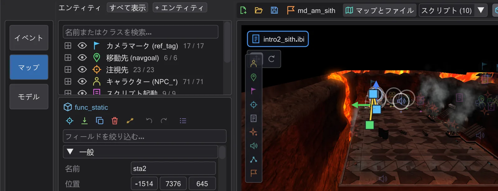
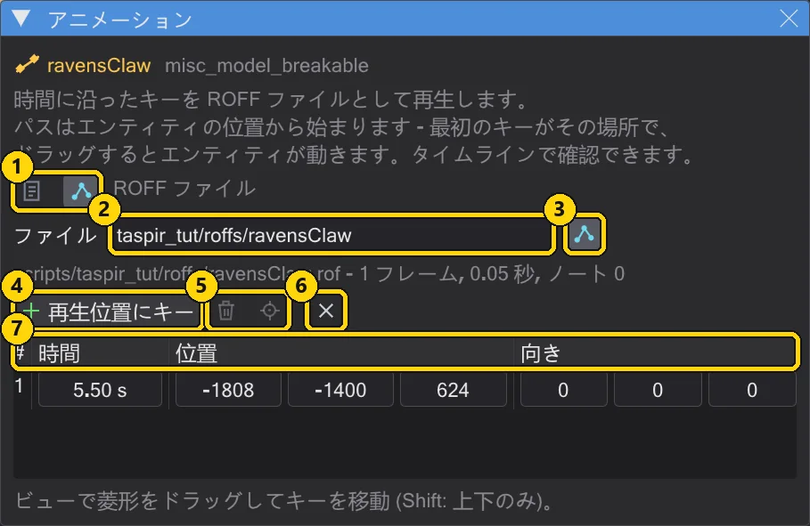
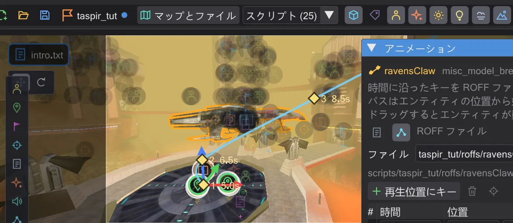
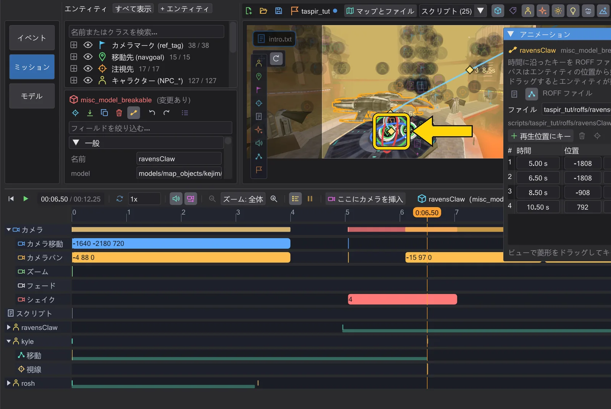
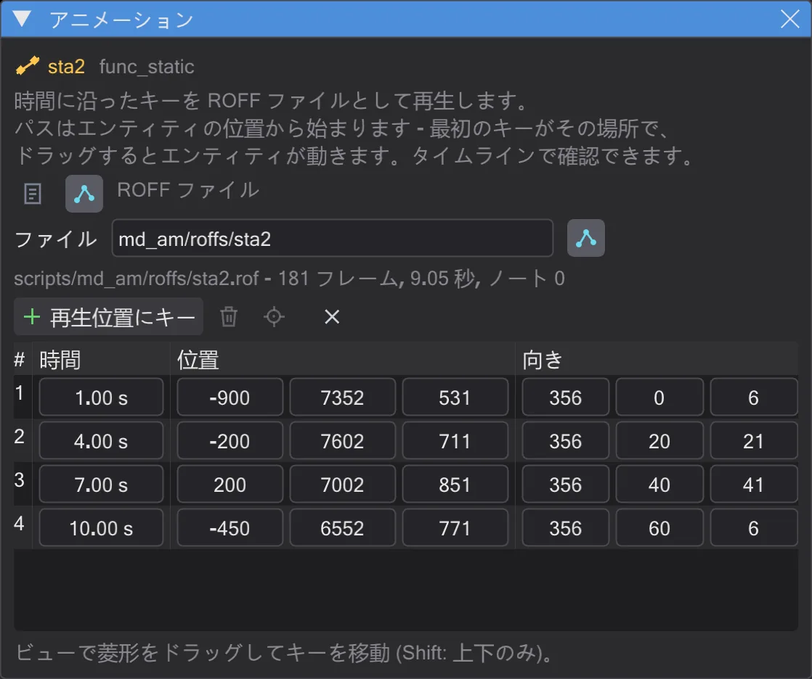

船を ROFF のパスで飛ばす
アリーナ上空を曲がりながら飛ぶ船の自由飛行を ROFF ファイルとして作り、ギズモで回転させ、ゲーム用に保存します。
手順#
- 1
船を選ぶ。
md_am_sithでマップ上の船sta2をクリックします。インスペクターにfunc_staticが表示されます。
船を選択した状態。 - 2
ROFF としてアニメーションを開く。 インスペクターで アニメート を押し、タイムラインを 1 秒にして ROFF ファイル を押します。スクリプトに
play ( "PLAY_ROFF", "md_am/roffs/sta2" )を含むブロックが入り、最初のキーは船の現在位置になります。
ROFF モードの アニメーション ウィンドウ。 - 3
次のキーを設定する。 タイムラインを 4 秒にして 再生位置にキー を押し、新しいひし形をアリーナの向こうへドラッグします。7 秒と 10 秒でも繰り返します。スムーズ がオンなら、パスはすべてのひし形を通る曲線になります。

4 つのキーと 1 本のなめらかな曲線。 - 4
船を回転させる。 タイムラインを 7 秒にし、ギズモを 回転 に切り替えて赤いリングをドラッグすると、船がカーブに合わせて傾きます。ウィンドウがこの船を表示しているので、ギズモは始点を変えずに 7 秒のキーを設定します。

赤いリングで 7 秒の船を傾ける。 - 5
確認する。 マップ下の再生ボタン(▶)を押します。タイムラインの 移動 に飛行が帯で表示され、ドラッグで開始を前後できます。

飛行中の船。 - 6
保存する。 Ctrl+S でスクリプトを書き出します。初回は保存先を聞かれるので、MOD の
scriptsフォルダーを選びます。同じ scripts フォルダーにmd_am/roffs/sta2.rofが書き出され、ステータス行にファイル名が表示されます。ミッションを保存 でミッションの.pk3に入ります。
ウィンドウに表示されるファイル名と長さ。保存するとファイルが書き出されます。


ROFF ファイルの仕組みとゲームの ROFF の編集方法は 可動物のアニメーションと ROFF ファイル を参照してください。